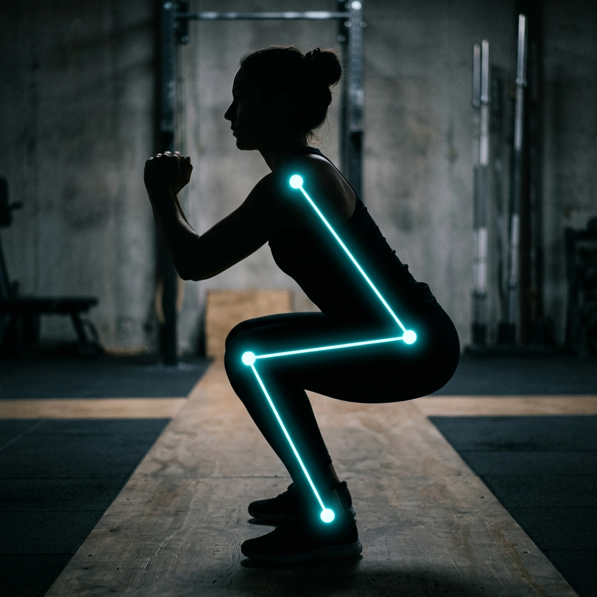

Usa MediaPipe y OpenCV con una simple webcam. Extrae coordenadas anatómicas 3D del paciente sin requerir trajes ni marcadores físicos de alto coste.
⚙️
Análisis Biomecánico en Tiempo Real
Mediante un núcleo trigonométrico, audita dinámicamente cada fase mecánica del ejercicio y emite feedback audiovisual para corregir la postura al instante.
📊
Ecosistema Clínico Integrado
Almacena el historial en base de datos, genera informes de progresión en texto y graba la sesión en vídeo MP4 a velocidad real para el fisioterapeuta.
✨ Solución Propuesta

Extracción de Landmarks 3D
Auditoría postural mediante Inteligencia Artificial y Visión por Computador